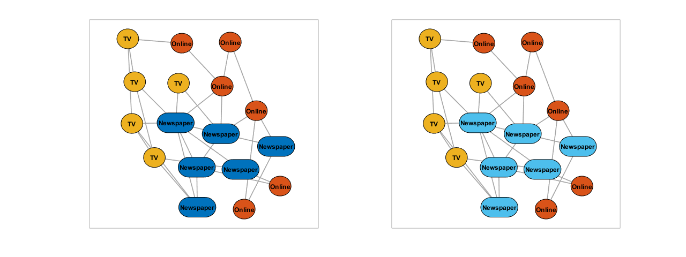

Demo (Media Example Network)
Contents
Preparing the input data (Media Example Network)
Nodes = readtable('data/Dataset1-Media-Example-NODES.csv'); Edges = readtable('data/Dataset1-Media-Example-EDGES.csv'); disp(Nodes(1:5, :)) % Display the first 5 rows disp(Edges(1:5, :)) % Display the first 5 rows nodes = Nodes.id; from = Edges.from; to = Edges.to; [~, ib_from] = ismember(from, nodes); [~, ib_to] = ismember(to, nodes); W = sparse(ib_from, ib_to, true, length(nodes), length(nodes));
id media media_type type_label audience_size
_______ _______________________ __________ _____________ _____________
{'s01'} {'NY Times' } 1 {'Newspaper'} 20
{'s02'} {'Washington Post' } 1 {'Newspaper'} 25
{'s03'} {'Wall Street Journal'} 1 {'Newspaper'} 30
{'s04'} {'USA Today' } 1 {'Newspaper'} 32
{'s05'} {'LA Times' } 1 {'Newspaper'} 20
from to type weight
_______ _______ _____________ ______
{'s01'} {'s02'} {'hyperlink'} 22
{'s01'} {'s03'} {'hyperlink'} 22
{'s01'} {'s04'} {'hyperlink'} 21
{'s01'} {'s15'} {'mention' } 20
{'s02'} {'s01'} {'hyperlink'} 23
Getting started
Let's start by visualizing our network with the default options (figure left). In addition, we can change the coloring and some node labels to make our plot prettier (figure right).
rng(0, 'twister'); % For reproducibility % Initialize the networkvisualizer object net = networkvisualizer(W); % Prepare the figure and plot the network (left panel) figure(1); clf(); % Clear the current figure set(gcf, 'Position', [0 80 1280 480]); % Setup the figure resolution subplot(1, 2, 1); plot(net) % Set the color of all nodes to light-blue setNodeColors(net, [0.30 0.75 0.93]); % Set the node labels as the type of the media setNodeLabels(net, Nodes.type_label); setNodeFontSize(net, 9); % Make sure the node sizes accomodate the labels setNodeSizes(net, 'auto'); % Plot the network (right panel) subplot(1, 2, 2); plot(net);

Using node classes - Color by category
The default color of 'Newspaper' nodes is a bit hard to see. Now, we can easily replace its color.using the node class named 'Media Type' that we previously added.
addNodeClass(net, Nodes.type_label, 'Media Type'); setNodeColors(net, 'default'); % Plot the network (left panel) subplot(1, 2, 1); plot(net); % Set the color of 'Newspaper' nodes to light-blue setNodeColors(net, [0.30 0.75 0.93], 'Newspaper', 'Media Type'); % Plot the network (right panel) subplot(1, 2, 2); plot(net);
Furthor customizations - Mark large and medium audiences
% Mark the Large Audience nodes (>= 40 size) addNodeClass(net, Nodes.audience_size >= 40, 'Large Audience'); setNodeLineWidth(net, 4, true, 'Large Audience'); setNodeLineColor(net, [1 0.2 0.6], true, 'Large Audience'); setNodeSizes(net, 12, true, 'Large Audience'); setNodeSizes(net, 'auto'); % Plot the network (left panel) subplot(1, 2, 1); plot(net); % Mark the Medium Audience nodes (30-40 size) addNodeClass(net, Nodes.audience_size < 40 & Nodes.audience_size >= 30, 'Medium Audience'); setNodeLineWidth(net, 2.75, true, 'Medium Audience'); setNodeLineColor(net, [0.6 0.2 0.4], true, 'Medium Audience'); % Plot the network (right panel) subplot(1, 2, 2); plot(net);
Using edge classes - Color by the category of incident nodes
% Highlight the edges between Medium Audience nodes createEdgeClass(net, 'Medium-Medium', true, true, 'Medium Audience'); setEdgeColors(net, [0.5 0.2 0.3], true, 'Medium-Medium'); setEdgeLineWidth(net, 2, true, 'Medium-Medium'); % Plot the network (left panel) subplot(1, 2, 1); plot(net); % Highlight the edges between Medium amd Large Audience nodes createEdgeClass(net, 'Medium-Large', true, true, 'Medium Audience', 'Large Audience'); setEdgeColors(net, [0.95 0.2 0.55], true, 'Medium-Large'); setEdgeLineWidth(net, 3, true, 'Medium-Large'); % Plot the network (right panel) subplot(1, 2, 2); plot(net);
Final network
% Set the labels the name of the media setNodeLabels(net, Nodes.media); setNodeFontSize(net, 11); figure(2); clf(); set(gcf, 'Position', [200 40 950 640]); plot(net);